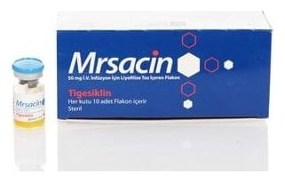

Mrsacin 50 mg I.V. İnfüzyon İçin Liyofilize Toz İçeren Flakon, Flakon, 1 Adet

Ne için kullanılır
KT · Bölüm 1MRSACİN 10 flakonluk ambalajlarda sunulmaktadır. Turuncu renkte, liyofilize (dondurularak kurutulmuş) kek ya da toz şeklindedir. Damar yoluyla kullanılmak üzere sulandırılarak hazırlanmış çözelti sarı-turuncu renktedir. Her bir flakon 50 mg tigesiklin tozu içerir.
MRSACİN, enfeksiyonlara sebep olan bakterilerin büyümesini durduran glisilsiklin grubuna ait bir antibiyotiktir.
Doktorunuz, sizde veya en az 8 yaşında olan çocuğunuzda aşağıda belirtilen ciddi enfeksiyonlardan birini geçirmekte olduğunuz için size MRSACİN reçete etmiştir: • Diyabetik ayak enfeksiyonları hariç olmak üzere, cilt ve yumuşak dokularda (cildin altındaki doku) komplike enfeksiyon • Karında komplike enfeksiyon MRSACİN yalnızca diğer alternatiflerinin uygun olmadığının bilindiği ya da şüphelenildiği durumlarda kullanılmalıdır.